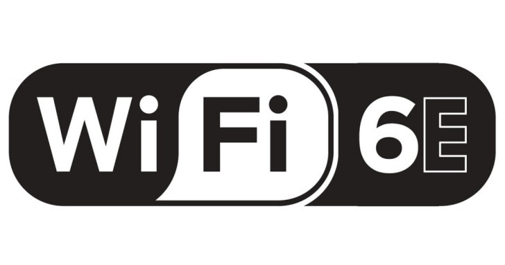

{% extends "base.html" %}
{% block current_app_content %}
    <h1>Wi-Fi 6E登場 增1.2 GHz可用頻寬 </h1>
    <br>
    
    <br><h3>
    <a><font color="#000000">美國聯邦通訊委員會（FCC）早前投票通過「Wi-Fi 6E」標準，當中最重要的決定是開放 6GHz 範圍的白色頻段（White Space）給公眾使用，將會額外提供 1,200MHz 頻寬，相比現時 5GHz 範圍的
        500Mhz，與 2.4GHz 的 60MHz 大為提升。</font></a>。
    <br>
    <br>
    <li>頻寬大為提升</li>
    <li>首批兼容裝置明年初應市</li>
    <br>
    <a><font color="#000000">要使用 Wi-Fi 6E，必須更換現有硬件，FCC 預計首批兼容裝置最早能於 2021 年初應市，屆時 Wi-Fi 裝置之間的通訊干擾情況將大幅減少，速度與時延表現可提升，除可用頻道增加外，網絡內亦能容納更多通訊裝置。
        <br>
        <br>
    </font></a>
    <br><br>
    <a href="{{ url_for('main.covid') }}"><font color="#9966ff">{{ _('【相關報道】不受新冠肺炎疫情影響 高通：5G發布如常') }}</font></a>
    <br>
    <a href="{{ url_for('main.intel') }}"><font color="#9966ff">{{ _('【相關報道】Intel被淡出？傳明年出貨Mac機改用自家處理器') }}</font></a></h3>
{% endblock %}